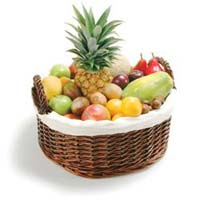

| Защо са полезни пресните плодове и зеленчуци | |
|---|---|
| Освен, че съдържат много ензими и витамини, пресните плодове и зеленчуци не са окислени. Процесът на окисляване става, когато храната се свърже с кислорода. Така както ръждясва желязото или потъмнява олиото при пържене, или пък когато ябълките и картофите потъмнеят след като се обелят. Всичко това е окислителен процес. |  |